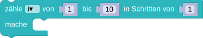

In der Eingabe steht eine große Zahl ohne Nullen. Das Programm soll die Zahl in ihre Ziffern auftrennen und jede als eigenen Eintrag in einer Liste speichern.
Gibt jeweils in einer Zeile die Liste, die erste und die letzte Ziffer aus.
Hinweis: Wenn du dem Baustein  als Trennzeichen nichts übergibst, dann ist jedes Zeichen ein eigener Eintrag in der Liste.
als Trennzeichen nichts übergibst, dann ist jedes Zeichen ein eigener Eintrag in der Liste.
Hinweis: Mit der Funktion list("Hallo Welt") kannst du den String in eine Liste umwandeln, sodass jedes Zeichen ein eigener Eintrag in der Liste ist.
In der Eingabe steht eine große Zahl ohne Nullen. Das Programm soll zählen wie oft jede Ziffer vorkommt.
Gib jeweils in einer Zeile die Zahl und die Häufigkeit durch ein Leerzeichen getrennt aus.
Hinweis: Um mit den vorgegebenen Variablen auszukommen musst du mit einer Liste arbeiten.
Weitere Hinweise:
Wir wissen, dass wir genau die Zahlen von 1-9 haben, da wir nur Ziffern betrachten. Anstatt also neun Variablen anzulegen, können wir einfach eine Liste verwenden.In der Ergebnisliste kann der Index dann für die Ziffer stehen und der Eintrag für die Häufigkeit. Für die Zahl
4442399 würde die Ergebnisliste dann so aussehen: 0,1,1,3,0,0,0,0,2. Wir haben also:
0,1,1,3,0,0,0,0,2 ← Eintrag
↑ ↑ ↑ ↑ ↑ ↑ ↑ ↑ ↑
1 2 3 4 5 6 7 8 9 ← Index
Es ist wichtig zwischen Index und Eintrag zu unterscheiden. Benutzen wir z.B. die Schleife:

Dann ist
i jeweils das 1. Zeichen 4, das 2. Zeichen 4 und so weiter... Benutzen wir allerdings

Dann ist
i jeweils das 1, 2 und so weiter... Je nachdem, welche der beiden Versionen wir verwenden, kann für die erste Version direkt
verwendet werden, oder für die zweite Schleifenversion
Weitere Hinweise:
Wir wissen, dass wir genau die Zahlen von 1-9 haben, da wir nur Ziffern betrachten. Anstatt also neun Variablen anzulegen, können wir einfach eine Liste verwenden.In der Ergebnisliste kann der Index dann für die um Eins größere Ziffer stehen und der Eintrag für die Häufigkeit. Für die Zahl
4442399 würde die Ergebnisliste dann so aussehen: 0,1,1,3,0,0,0,0,2. Wir haben also:
0,1,1,3,0,0,0,0,2 ← Eintrag
↑ ↑ ↑ ↑ ↑ ↑ ↑ ↑ ↑
0 1 2 3 4 5 6 7 8 ← Index
↑ ↑ ↑ ↑ ↑ ↑ ↑ ↑ ↑
1 2 3 4 5 6 7 8 9 ← Ziffer (nicht extra in der Liste gespeichert)
Es ist wichtig zwischen Index und Eintrag zu unterscheiden. Benutzen wir z.B. die Schleife:
for i in liste:Dann ist
i jeweils das 1. Zeichen 4, das 2. Zeichen 4 und so weiter... Benutzen wir allerdings
for i in range(len(liste_eingabe)):Dann ist
i jeweils das 0, 1 und so weiter... Je nachdem, welche der beiden Versionen wir verwenden, kann für die erste Version direkt
liste[i-1]verwendet werden, oder für die zweite Schleifenversion
liste[liste_eingabe[i]]In der Eingabe steht eine große Zahl ohne Nullen. Das Programm soll speichern an welchen Positionen jede Ziffer jeweils vorkommt.
Gib jeweils in einer Zeile die Zahl und an welchen Positionen diese Zahl auftritt durch ein Leerzeichen getrennt aus:
1 2,4,5 2 3 7 ...
Hinweis: Um nicht zu viele Variablen erstellen zu müssen sollte mit einer Liste gearbeitet werden.
Weitere Hinweise:
Wir wissen, dass wir genau die Zahlen von 1-9 haben, da wir nur Ziffern betrachten. Anstatt also neun Variablen anzulegen, können wir einfach eine Liste verwenden.Da jede Zahl aber an mehreren Positionen vorkommen kann, sollte diese ebenfalls als Liste gespeichert werden. Wir haben also eine Liste von Listen. In der Ergebnisliste kann der Index dann für die Ziffer stehen und der Eintrag für die Positionen. Für die Zahl
4442399 würde die Ergebnisliste dann so aussehen: [[0],[4],[5],[1,2,3],[0],[0],[0],[0],[6,7]]. Wir haben also:
3
2 7
0,4,5,1,0,0,0,0,6
|
← 3 ← 2 ← 1 |
← Index der Positionen |
↑ ↑ ↑ ↑ ↑ ↑ ↑ ↑ ↑
1 2 3 4 5 6 7 8 9 ← Index der Positionslisten in der Ergebnisliste
Es ist wichtig zwischen Index und Eintrag zu unterscheiden. Benutzen wir z.B. die Schleife:
Dann ist
i jeweils das 1. Zeichen 4, das 2. Zeichen 4 und so weiter... Benutzen wir allerdings
Dann ist
i jeweils das 1, 2 und so weiter... Je nachdem, welche der beiden Versionen wir verwenden, kann für die erste Version direkt
verwendet werden, oder für die Zweite Schleifenversion
Weitere Hinweise:
Wir wissen, dass wir genau die Zahlen von 1-9 haben, da wir nur Ziffern betrachten. Anstatt also neun Variablen anzulegen, können wir einfach eine Liste verwenden.Da jede Zahl aber an mehreren Positionen vorkommen kann, sollte diese ebenfalls als Liste gespeichert werden. Wir haben also eine Liste von Listen. In der Ergebnisliste kann der Index dann für die Ziffer stehen und der Eintrag für die Positionen. Für die Zahl
4442399 würde die Ergebnisliste dann so aussehen: [[0],[4],[5],[1,2,3],[0],[0],[0],[0],[6,7]]. Wir haben also:
3
2 7
0,4,5,1,0,0,0,0,6
|
← 3 ← 2 ← 1 |
← Positionen |
↑ ↑ ↑ ↑ ↑ ↑ ↑ ↑ ↑
0 1 2 3 4 5 6 7 8 ← Index der Positionslisten in der Ergebnisliste
Es ist wichtig zwischen Index und Eintrag zu unterscheiden. Benutzen wir z.B. die Schleife:
for i in liste:Dann ist
i jeweils das 1. Zeichen 4, das 2. Zeichen 4 und so weiter... Benutzen wir allerdings
for i in range(len(liste_eingabe)):Dann ist
i jeweils das 0, 1 und so weiter... Je nachdem, welche der beiden Versionen wir verwenden, kann für die erste Version direkt
liste[i-1]verwendet werden, oder für die zweite Schleifenversion
liste[liste_eingabe[i]]